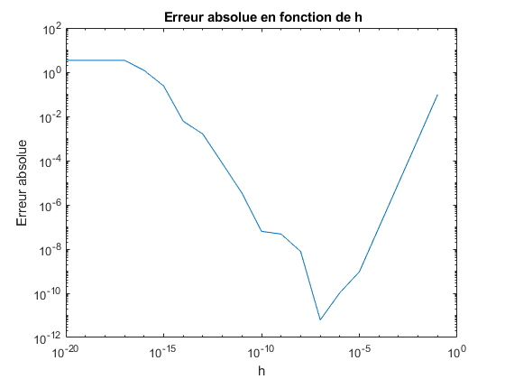
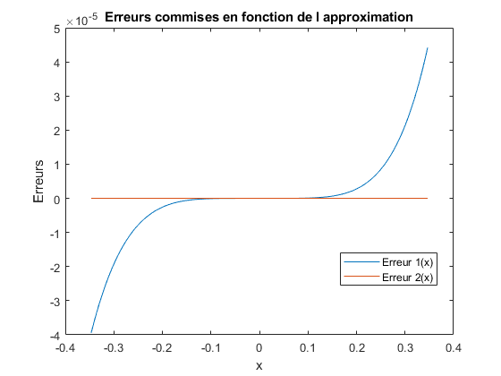
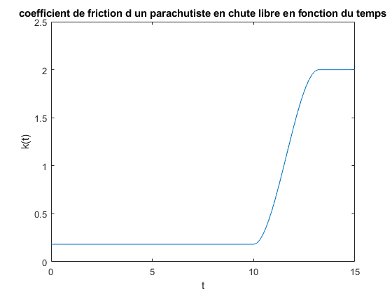
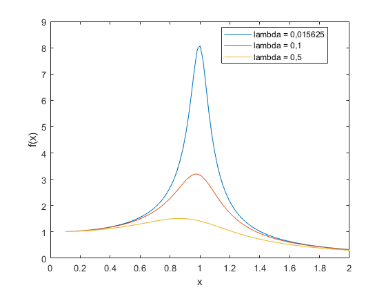

MTH2210A-RAPPORT DE LABORATOIRE
Laboratoire 1: MATLAB
Auteurs: Dewit Louise Matricule: 1902576 Groupe:02 Beaulieu Marie-Pier Matricule: 1905107 Groupe:02
Date: 05-09-2019
Contents
Exercice 1
err= [0.5671; 0.4328; 0.4555e-01; 0.3305e-02; 0.2707e-04; 0.1660e-7]; alpha = (1+sqrt(5))/2; E= err(1: end-1); En= err(2: end); v1 = abs(En./E); v2 = abs(En./(E.^alpha)); v3 = abs(En./(E.^2)); fprintf( '%s \t %s \t %s \n', 'ratio 1',' ratio 2', ' ratio 3') for n = 1: 5 fprintf ('%16.15e \t %16.15e \t %16.15e \n', v1(n), v2(n), v3(n)) end
ratio 1 ratio 2 ratio 3 7.631810968083230e-01 1.083613271990273e+00 1.345761059439822e+00 1.052449168207024e-01 1.765988900133284e-01 2.431721738001442e-01 7.255762897914381e-02 4.895339983934166e-01 1.592922699871434e+00 8.190620272314673e-03 2.796102884759861e-01 2.478251217039236e+00 6.132249722940524e-04 4.078470583206059e-01 2.265330521958080e+01
Exercice 2
n = 1:20; h= 10.^(-n); approx= (tan(1+h)- tan(1-h))./(2.*h); err= abs(approx - sec(1)^2);
a)
fprintf ( '%s\t %s \t %s \n','h', ' Approximation', ' Erreur absolue') for i= 1: 20 fprintf( '%2.0e \t %16.15f \t %16.15f \n',h(i), approx(i), err(i)) end figure(1) loglog( h, err); xlabel('h') ylabel('Erreur absolue') title(' Erreur absolue en fonction de h')
h Approximation Erreur absolue 1e-01 3.523007198491566 0.097488377676807 1e-02 3.426464160083409 0.000945339268650 1e-03 3.425528271343459 0.000009450528700 1e-04 3.425518915318726 0.000000094503967 1e-05 3.425518821753571 0.000000000938812 1e-06 3.425518820709961 0.000000000104798 1e-07 3.425518820820983 0.000000000006224 1e-08 3.425518813049422 0.000000007765337 1e-09 3.425518868560573 0.000000047745814 1e-10 3.425518757538271 0.000000063276488 1e-11 3.425515426869196 0.000003393945563 1e-12 3.425593142480921 0.000074321666161 1e-13 3.423927807943983 0.001591012870776 1e-14 3.419486915845482 0.006031904969277 1e-15 3.663735981263016 0.238217160448257 1e-16 2.220446049250313 1.205072771564446 1e-17 0.000000000000000 3.425518820814759 1e-18 0.000000000000000 3.425518820814759 1e-19 0.000000000000000 3.425518820814759 1e-20 0.000000000000000 3.425518820814759
Exercice 3
x=linspace(-log(2)/2,log(2)/2,129); p4=1+x + x.^2/2 + x.^3/6 + x.^4/24; Q= 0.5+0.555538666969001188e-1*x.^2+0.495862884905441294e-3*x.^4; P=0.249999999999999993 + 0.694360001511792852e-2*x.^2 +0.165203300268279130e-4*x.^4; r= (Q+x.*P)./(Q-x.*P); Err1= exp(x) - p4; Err2= exp(x) - r; figure(2) plot(x, Err1) hold on plot(x, Err2) xlabel('x') ylabel('Erreurs') title('Erreurs commises en fonction de l approximation') legend('Erreur 1(x)','Erreur 2(x)','Location','Best') hold off
Commnetaires
Il est possible d'observer sur le graphique que l'approximation p4(x) tend à s'éloigner de la valeur exacte pour des valeurs qui ne sont pas dans le voisinage de x=0. L'approximation r(x) à une allure constante a environ 0. L'approximation avec r(x) permet une erreur plus faible sur un plus grand intervalle.
Exercice 4
for n= 1:13 fact(n)=prod(1:n); end m= 1:13; s= sqrt(2*pi().*m).*(m./exp(1)).^m; errA= abs(fact-s); errR= abs(fact-s)./fact; fprintf( '%s \t %s\t %s\n', ' n','Erreur absolue', ' Erreur relative') for n=1:13 fprintf( '%2d \t %16.15e \t %16.15e \n', n, errA(n), errR(n)) end
n Erreur absolue Erreur relative 1 7.786299110421113e-02 7.786299110421113e-02 2 8.099564851101770e-02 4.049782425550885e-02 3 1.637904086541395e-01 2.729840144235659e-02 4 4.938248671067207e-01 2.057603612944670e-02 5 1.980832042409972e+00 1.650693368674977e-02 6 9.921815357815944e+00 1.378029910807770e-02 7 5.960416838754463e+01 1.182622388641759e-02 8 4.176045473433333e+02 1.035725563847553e-02 9 3.343127158052055e+03 9.212762230081722e-03 10 3.010438125896733e+04 8.295960443939411e-03 11 3.011749494225532e+05 7.545067475913730e-03 12 3.314113527225077e+06 6.918794273808432e-03 13 3.978132480729485e+07 6.388500389671871e-03
Commentaires
%Il est possible d'observer que la valeur absolue est croissante en %fonction du n, tandis que l'erreur relative diminue. Puisque l'erreur %relative tient compte de l'ordre de grandeur de n, on peut conclure que %même si l'erreur absolue augmente, son importance diminue avec n.
Exercice 5
nbor = (1+sqrt(5))/2; fib = [0,1]; fib1=0; fib2=1; deltaf=1; i=3; while deltaf > 0.5e-5 x= fib2+fib1; ratio= x/fib2; fib1=fib2; fib2=x; deltaf = abs (nbor- ratio); i=i+1; end
Exercice 6
Question (a)
t= linspace(0,15);
Question (b)
figure(3); plot( t, Function(t)) xlabel('t') ylabel('k(t)') ylim([0,2.5]) title('coefficient de friction d un parachutiste en chute libre en fonction du temps')
Exercice 7
Question (a)
x = linspace(0.1,2);
global lambda
Question (b)
figure(4); lambda = 0.01525; plot(x, function2(x)) hold on lambda = 0.1; plot(x, function2(x)) hold on lambda = 0.5; plot(x, function2(x)) hold off xlabel('x') ylabel('f(x)') legend('lambda = 0,015625','lambda = 0,1','lambda = 0,5','Location','Best')
Question 8
pn = 2*sqrt(2); fprintf( '%s \t %s \t %s \n', 'n',' pn', ' erreur absolue') for n = 3:30 p = (2.^(n-1).*sqrt(2.*(1-sqrt(1-(pn./(2.^(n-1))).^2)))); pn = p; e = abs(pi()- pn); fprintf ('%2d \t %16.15e \t %16.15e \n', n, pn, e) end
n pn erreur absolue 3 3.061467458920719e+00 8.012519466907442e-02 4 3.121445152258053e+00 2.014750133174026e-02 5 3.136548490545941e+00 5.044163043852468e-03 6 3.140331156954739e+00 1.261496635053927e-03 7 3.141277250932757e+00 3.154026570362234e-04 8 3.141513801144145e+00 7.885244564764804e-05 9 3.141572940367883e+00 1.971322191041125e-05 10 3.141587725279961e+00 4.928309832230582e-06 11 3.141591421504635e+00 1.232085157898410e-06 12 3.141592345611077e+00 3.079787163073888e-07 13 3.141592576545004e+00 7.704478877101906e-08 14 3.141592633463248e+00 2.012654487515420e-08 15 3.141592654807589e+00 1.217796086194767e-09 16 3.141592645321215e+00 8.268577822434509e-09 17 3.141592607375720e+00 4.621407345695161e-08 18 3.141592910939673e+00 2.573498796287765e-07 19 3.141594125195191e+00 1.471605397984632e-06 20 3.141596553704820e+00 3.900115026489459e-06 21 3.141596553704820e+00 3.900115026489459e-06 22 3.141674265021758e+00 8.161143196439014e-05 23 3.141829681889202e+00 2.370282994084150e-04 24 3.142451272494134e+00 8.586189043406911e-04 25 3.142451272494134e+00 8.586189043406911e-04 26 3.162277660168380e+00 2.068500657858641e-02 27 3.162277660168380e+00 2.068500657858641e-02 28 3.464101615137754e+00 3.225089615479613e-01 29 4.000000000000000e+00 8.584073464102069e-01 30 0.000000000000000e+00 3.141592653589793e+00
Commentaires
À partir de n= 17, l'erreur absolue augmente ce qui ne devrait pas être le cas puisque, plus le nombre de côté augmente, plus on devrait être proche du périmètre d'un cercle.
% pour p15: % 1.21178...e-09 < 0.5e-8, donc le nombre de chiffres significatifs est 9. % Pour p24: % 8.586189...e-04 < 0.5e-2, donc le nombre de chiffres significatifs est 3.